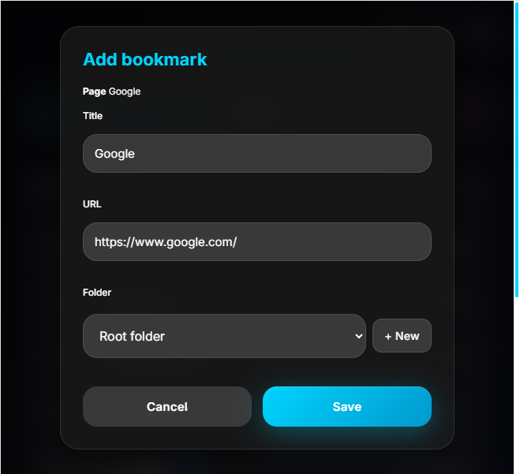
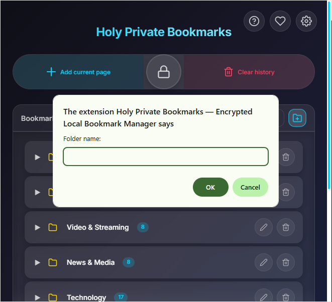
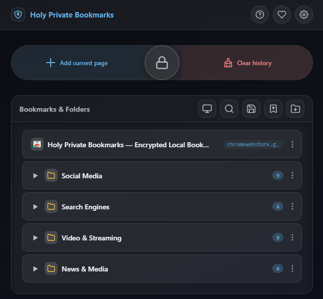
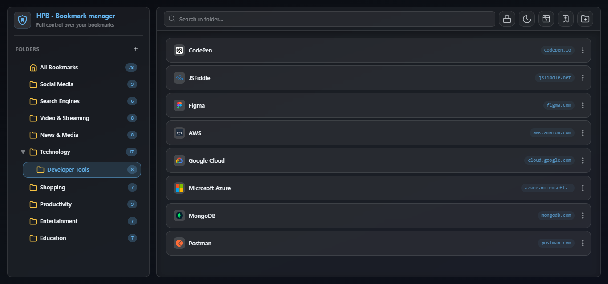
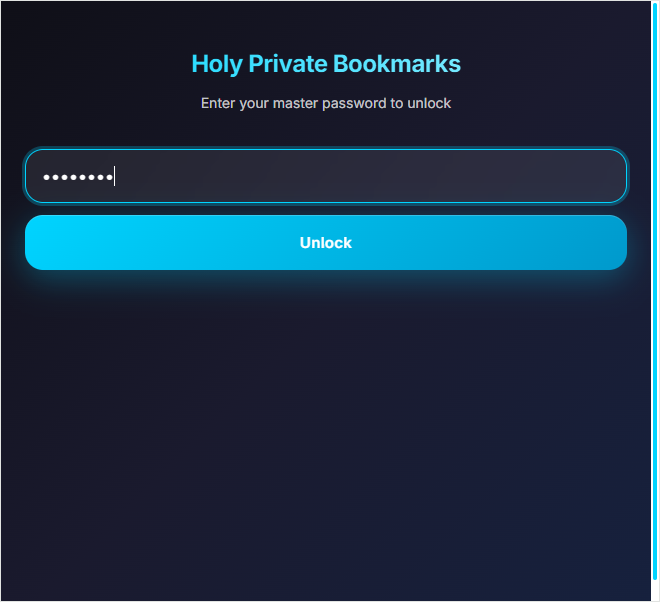
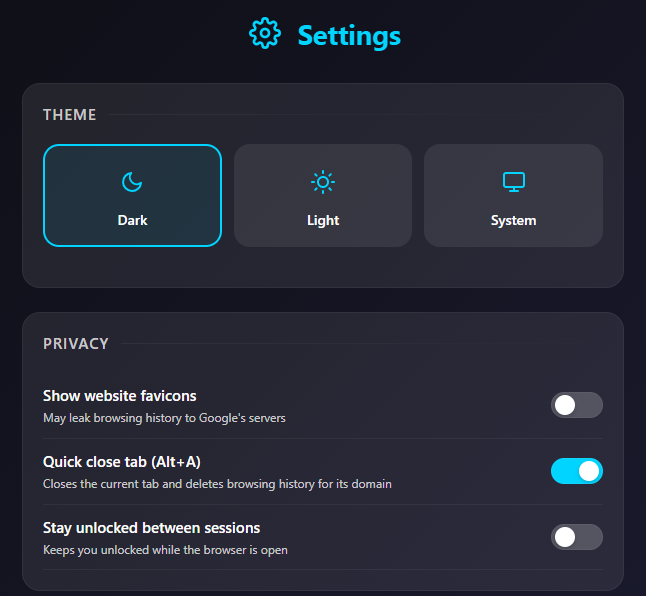
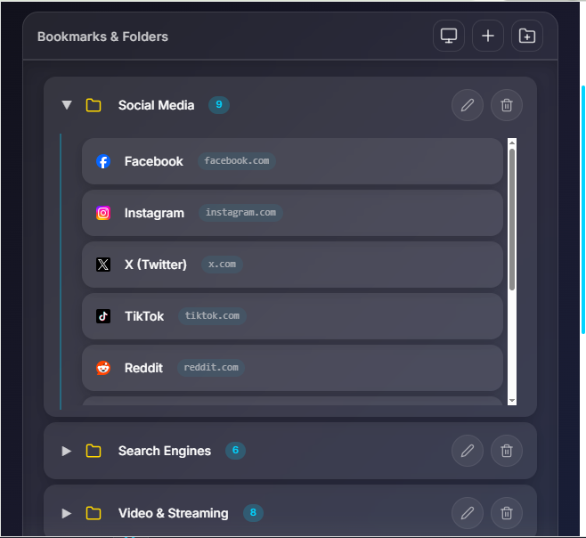
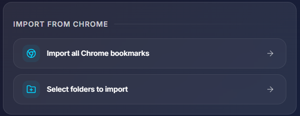
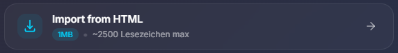
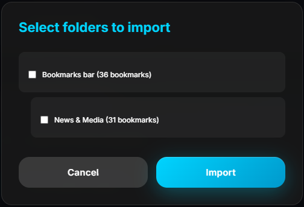

Holy Private Bookmarks
Privacy-first bookmark manager with military-grade encryption
Privacy-first bookmark manager with military-grade encryption
Your bookmarks are encrypted locally with AES-256-GCM. Even we can't access them without your password.
Automatically locks after 10 minutes of inactivity. Your bookmarks stay safe when you're away.
Create nested folders, drag & drop bookmarks, and keep everything perfectly organized.
Automatically remove browsing history for bookmarked domains to maintain privacy.
Easily import your existing Chrome bookmarks with full folder structure preserved.
Choose between dark, light, or system theme for comfortable use day and night.
Multiple ways to save your favorite pages

Click the '+' button in popup to save the page you're viewing
Use the 'Add Bookmark' button in the popup toolbar
Right-click any page and select "Add to Holy Private Bookmarks
Organize your bookmarks with folders and subfolders
Click the 'New Folder' button in the popup toolbar
Create folders directly in the manager interface
Create subfolders inside existing folders for deep organization
Easily rename any folder with inline editing

Drag & drop, counters, and visual hierarchy
Build deep folder hierarchies with unlimited nesting levels
See at a glance how many bookmarks are in each folder
Move folders and bookmarks with intuitive drag and drop
Quick access to your bookmarks right from the toolbar

Quickly bookmark the page you're viewing with one click
Create new folders directly from the popup
Remove browsing history for all bookmarked domains
Instantly lock the extension when you step away
Complete bookmark management with advanced features
Real-time search through all your bookmarks by title or URL
Clean list layout with website favicons and domains
Select multiple bookmarks to move, copy, or delete

Your bookmarks are protected by a master password

Single password to encrypt/decrypt all your bookmarks
Automatically locks after 10 minutes of inactivity
Change your master password anytime with re-encryption
Password cannot be recovered - maximum security
Full control over your bookmarks
Dark, Light, or System theme with live preview
Create encrypted backup of all your bookmarks
Import all Chrome bookmarks or select specific folders
Import bookmarks from Netscape HTML format

Organize your bookmarks your way
Create unlimited levels of subfolders
Move folders and bookmarks with simple drag & drop
Easy folder management with inline editing
See bookmark count in each folder at a glance

Multiple ways to bring your bookmarks

Import all Chrome bookmarks with full folder structure

Import bookmarks from Netscape HTML format

Choose specific folders to import from Chrome
Quick answers to common questions
All your bookmarks are encrypted locally using AES-256-GCM encryption with a master password. Your data never leaves your computer. Even we cannot access your bookmarks without your password.
We don't store your password or any recovery keys. If you forget your password, you will permanently lose access to all your encrypted bookmarks. Please save your password in a secure password manager.
This is a core security feature built on a zero-trust model:
Yes! Go to Settings → Export & Import → Export Bookmarks. This creates an encrypted backup file. You can restore it anytime using the Import option.
Removes Chrome browsing history for domains in your bookmarks. Helps maintain privacy by automatically clearing history traces of bookmarked sites.
If you can't unlock:
Currently, bookmarks are stored locally on your device. You can manually export/import to transfer between devices. Cloud sync is planned for future versions.
Yes! Go to Settings → Import from Chrome. You can import all bookmarks or select specific folders. Existing bookmarks are preserved.
Contact us or check the GitHub repository: